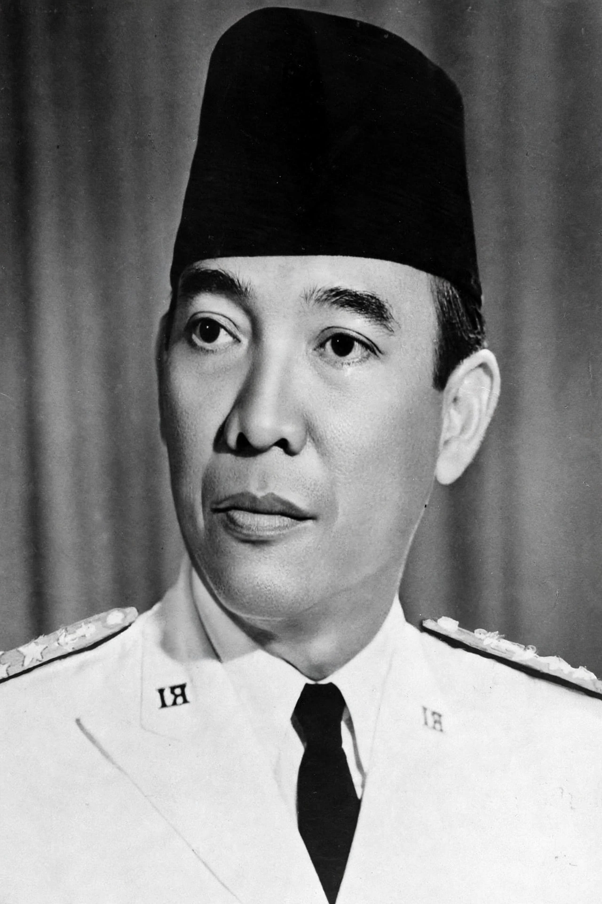

Sukarno (6 June 1901 – 21 June 1970) was an Indonesian statesman who was the first president of Indonesia, serving from 1945 to 1967. He led Indonesia's struggle for independence from the Dutch East Indies and proclaimed independence on 17 August 1945.

| Sukarno | |
|---|---|
| Born | 6 June 1901, Surabaya |
| Died | 21 June 1970, Jakarta |
| President of Indonesia | 1945–1967 |
| Party | Indonesian National Party (PNI) |
Born Kusno Sosrodihardjo in Surabaya, Sukarno studied engineering in Bandung, founded the PNI in 1927, and was repeatedly exiled by the Dutch. He formulated Pancasila as the state philosophy in 1945.
Sukarno hosted the 1955 Bandung Conference, championing the Non-Aligned Movement. His 'Guided Democracy' period (1959–1965) saw growing authoritarianism, confrontation with Malaysia, and closeness to the PKI communists. After the 30 September Movement in 1965 and mass killings, Suharto forced his resignation in 1967. Jakarta's main airport is named Soekarno–Hatta after him and Mohammad Hatta.